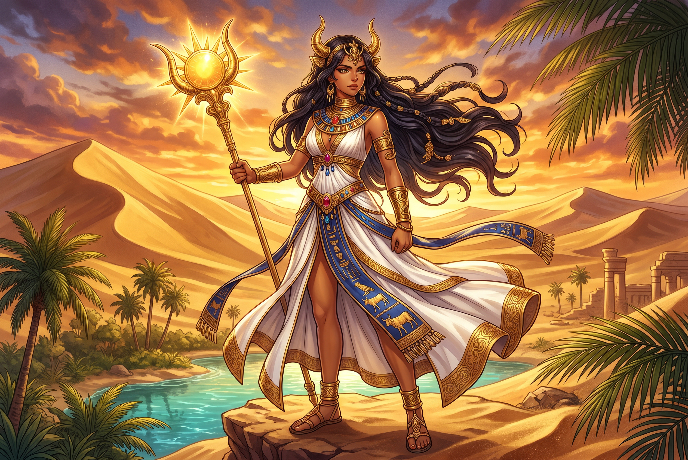

Ancient Domain
In the greek location tradition, Libyē governed personified continent of africa. The name encodes a sphere of power that shaped ritual, narrative, and social order.
Extended Lore
Etymology · Phonology · Orthography · Cultural Legacy · Primary Sources

Essential information about Libyē, Personified Continent of Africa
From original script to Unicode restoration
Libyē is Tier 1 because the final eta is long. Greek had no acute on this form in our restoration, but the length mark is the scholarly feature being preserved. The name originally designated North Africa west of Egypt and only later narrowed to the modern state.
Character-by-character philological analysis
| Character | Unicode | Name | Block | Phonetic Role |
|---|---|---|---|---|
| L | U+004C | Latin Capital Letter L | Basic Latin | Lambda |
| i | U+0069 | Latin Small Letter I | Basic Latin | Iota |
| b | U+0062 | Latin Small Letter B | Basic Latin | Beta |
| y | U+0079 | Latin Small Letter Y | Basic Latin | Upsilon |
| ē | U+0113 | Latin Small Letter E with Macron | Latin Extended-A | Eta: long vowel |
The Tier 1 classification reflects how much of the original phonology this restoration preserves — stress and vowel length for Greek names, distinctive letters and diacritics for every other tradition.
From ancient cult to modern Unicode
In the greek location tradition, Libyē governed personified continent of africa. The name encodes a sphere of power that shaped ritual, narrative, and social order.
Greek cult and myth travelled with colonists, traders, and conquerors; Roman adaptation, Hellenistic ruler cult, and later European classicism all recast this name for new audiences.
The name endures in place names, scholarly vocabulary, modern fiction, and the ongoing recovery of ancient Greek culture through archaeology and philology. Restoring Libyē in Unicode preserves the name's cultural specificity against the flattening force of plain ASCII. Libye became the Greek name for North Africa west of Egypt, later Latinized as Libya and revived for the modern nation-state. The mythic princess and her daughters provided a genealogical bridge between Greek, Egyptian, and indigenous Libyan identities. The name thus encodes both mythic genealogy and the Greek encounter with the African interior across the Sahara and the Mediterranean. Its Unicode restoration preserves the Greek spelling that first mapped the North African coast. In Greek tragedy and lyric, Libye represents both the dangers and the allure of the African frontier.
Restoring Libyē in a domain name is more than orthographic accuracy. It is a statement that the internet should recognize the full range of human writing — not only the ASCII keyboard.
Common questions about Libyē, Personified Continent of Africa, and Unicode restoration
In reconstructed pronunciation, Libyē is /li.ˈbýː.ɛː/ — approximately 'lee-BOO-ay' — the middle vowel is tight and rounded like French u, and the final 'ay' is held long..
Libyē means The African continent (etymology uncertain) in the greek-location tradition.
Libyē is associated with Saharan lion (The North-African lion that emblematised the wilds beyond Greek settlement), Lotus-eater's island (The dreamy shore visited by Odysseus, placed by Homer in Libyan waters), Silphium plant (The extinct North-African medicinal herb worth its weight in silver), Oracle of Ammon (The Siwa oasis sanctuary where Zeus Ammon spoke, the Libyan Delphi), Gorgon's head (The Libyan-born Medusa, whose petrifying visage belongs to the continent's mythic west).
Plain ASCII libye strips the stress, length, and script that make the name specific. Unicode restoration returns the name to its original written dignity.
Libya's father was Epaphus, the son born to Io after her wanderings from Argos to Egypt. Io, transformed into a heifer by Zeus and driven across Europe and Asia, finally found rest in Egypt and there gave birth to Epaphus. Epaphus in turn married Memphis, the eponym of the Egyptian capital, and their daughter Libya became the namesake of the African land west of the Nile.This genealogy makes Libya the granddaughter of the Argive princess Io, linking the African continent to the same mythic network that produced Europa and Asia. The Greeks thus imagined Libya not as an alien south but as a branch of a single divine family tree rooted in Argos, Egypt, and Phoenicia.
The philological foundations of this restoration
Every claim on this page is grounded in established scholarship. The orthographic restorations follow disciplinary convention. The etymological chain follows the best available reference works. This is not invention — it is resurrection through scholarship.
You have traced the name from its earliest attestation to its Unicode restoration. Now return to the myth. The story is where the name lives.
Back to Lore